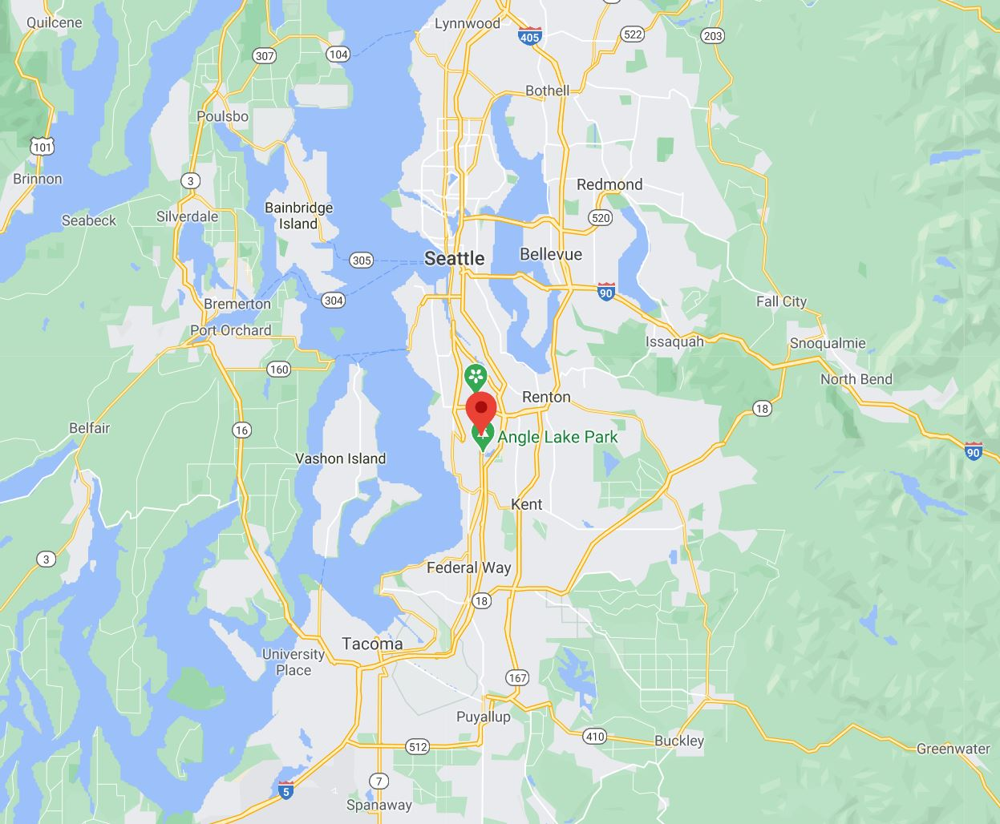

Hi! I'm Trieu Nguyen
I'm a student at Thinkful
Things I enjoy doing in my free time:
- Reading books & articles about investing.
- Watching documentaties.
- Practicing coding (new hobby).
Please take a look at my website and feel free to Contact Me!
About Trieu
After graduating college, I became a banker and worked with diversified groups of clients from many different backgrounds. I found myself enjoy solving their problems and that lead me to become interested in coding.
As a retail stock investor, I learned trading global equity markets, currencies, and options. I’ve also gained the knowledge of corporate fundamentals and parameters of the companies that I want to invest/trade. From the period of March – June 2020, I was able the increase my account by more than 460% by investing in pharmaceutical companies using the research skills and the ability to calculate risk & returns of the investments.
As a student at Thinkful, I've begun my journey to becoming a software engineer and developed a new habit of coding for 5-6 hours every day. I can't wait to see what skills I will acquire after I graduated from the program.
Contact Trieu
I'd love to hear from you! Please feel free to contact or follow me:
